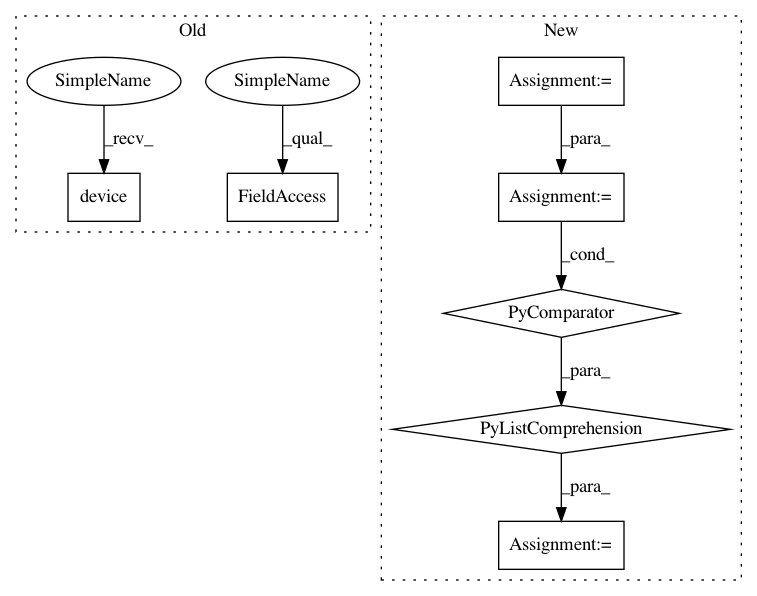

054095d922edda5134e520522bc82a1b95cc5bd4,onnx_tf/backend.py,TensorflowBackend,run_node,#Any#Any#Any#Any#Any#,167
Before Change
ops = cls._onnx_node_to_tensorflow_op(node, input_dict)
with tf.compat.v1.Session() as sess:
with tf.device(device_option):
sess.run(tf.compat.v1.global_variables_initializer())
output_vals = sess.run(ops)
return namedtupledict("Outputs", node.outputs)(*output_vals)
After Change
module = TFModule(node)
output_vals = module(**input_dict)
output_vals = [val.numpy() if isinstance(val, tf.Tensor) else val for val in output_vals]
return namedtupledict("Outputs", node.outputs)(*output_vals)
@classmethod
In pattern: SUPERPATTERN
Frequency: 3
Non-data size: 7
Instances
Project Name: onnx/onnx-tensorflow
Commit Name: 054095d922edda5134e520522bc82a1b95cc5bd4
Time: 2020-09-09
Author: smonov@gmail.com
File Name: onnx_tf/backend.py
Class Name: TensorflowBackend
Method Name: run_node
Project Name: pytorch/tutorials
Commit Name: 133e5b6a84e126cbcfbc5c11eeb6286185dbec2f
Time: 2020-12-02
Author: 6156351+zhangguanheng66@users.noreply.github.com
File Name: beginner_source/torchtext_translation_tutorial.py
Class Name:
Method Name:
Project Name: onnx/onnx-tensorflow
Commit Name: 054095d922edda5134e520522bc82a1b95cc5bd4
Time: 2020-09-09
Author: smonov@gmail.com
File Name: onnx_tf/backend.py
Class Name: TensorflowBackend
Method Name: run_node
Project Name: ultralytics/yolov3
Commit Name: 3825e99ee36bd237d11f702af93a2acba4496c9b
Time: 2019-04-08
Author: glenn.jocher@ultralytics.com
File Name: utils/torch_utils.py
Class Name:
Method Name: select_device